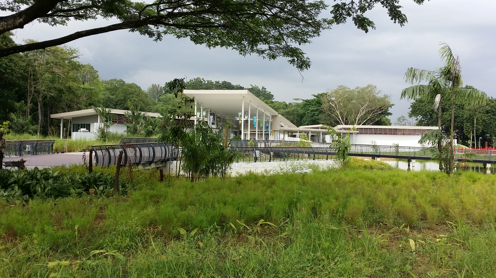

|  | |
|
|
|
| Visitor Centre | Observation Pod | Coastal Trail | Mangrove Broadwalk | Wetland Centre |
Discover the beauty and wonders of nature at Singapore’s first ASEAN Heritage Park.
Uncover a world filled with rich biodiversity as you wander through the wetlands with an extensive mangrove forest of Sungei Buloh Wetland Reserve.
Sungei Buloh was first opened as a Nature Park in 1993. In 2002, 130 hectares were officially gazetted as a Nature Reserve and renamed Sungei Buloh Wetland Reserve to better reflect its status. In the same year, it was recognised as a site of international importance for migratory birds and awarded a certificate by Wetlands International, marking the reserve's formal entry into the East Asian Australasian Shorebird Site Network, which includes Australia's Kakadu National Park, China's Mai Po – Inner Deep Bay and Japan's Yatsu Tidal Flats. And in 2003, Sungei Buloh Wetland Reserve became Singapore's first ASEAN Heritage Park.
Since then Sungei Buloh has expanded to include 202ha of mangroves, mudflats, ponds and forests, providing an even larger sanctuary for the flora and fauna that call it home. This includes the newest extension that houses a brand new Visitor Centre and new trails for visitors to explore and enjoy. This new extension is situated along Kranji Way, and is easily accessible by public transport, bringing Sungei Buloh even closer to the public.
Trek through this ecological jewel’s many trails and discover its native inhabitants such as mudskippers, crabs, shellfish, water snakes, birds, spiders, monitor lizards and otters. Admire the beauty of resident birds such as herons, kingfishers and sunbirds.
During the migratory season, catch sight of the diverse flocks of shorebirds or waders including plovers and sandpipers.
View live scenes of Sungei Buloh here.
Catch a glimpse of the wildlife found in Sungei Buloh through these videos.